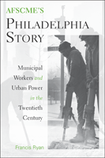

<body bgcolor="#FFFFFF" text="#000000" link="#0000FF" vlink="#CC0000" alink="#CC0000"><center><hr width="350" size="1" align="center" noshade>A history of the largest union in the AFL-CIO and its growth in a major American city<hr width="350" size="1" align="center" noshade><p><a href="https://cdcshoppingcart.uchicago.edu/Cart/ChicagoBook.aspx?ISBN=9781439902783&&PRESS=temple" target="_top">Buy this book!</a> | <a href="https://cdcshoppingcart.uchicago.edu/Cart/Cart.aspx?PRESS=temple" target="_top">View Cart</a> | <a href="https://cdcshoppingcart.uchicago.edu/Cart/Cart.aspx?PRESS=temple" target="_top">Check Out</a></p><p></p></center><!--none//--><h1>AFSCME's Philadelphia Story</h1>
<H2>Municipal Workers and Urban Power in the Twentieth Century</H2>
<h3>Francis Ryan</h3>
<P>cloth 1-4399-0278-X $65.50, Nov 10, <FONT COLOR=#990033>Available</FONT>
<br>paper 1-4399-0279-8 $29.95, <FONT COLOR=#990033>Available</FONT>
<br>Electronic Book 1-4399-0280-1 $28.95 <FONT COLOR=#990033>Available</FONT>
<BR> 320 pp
6x9
2&nbsp;figures 30&nbsp;halftones
</P><BLOCKQUOTE><I>"<em>This is arguably the most enlightening study of a municipal union movement yet written. </em>AFSCME�S Philadelphia Story <em>should become required reading for anyone who seeks to understand the rise of public sector unionism in post-World War II America and its intersection with urban politics and the movement for racial equality. By bringing these subjects together in one narrative, this book makes an indispensable contribution to the literature of recent American labor history.</em></I>"
<BR>&mdash;<b>Joseph A. McCartin</b>, Associate Professor of History, Georgetown University</I></BLOCKQUOTE>
<p>Beginning in the 1920s and ending in the 2000s, <em>AFSCME's Philadelphia Story</em> provides a comprehensive account of the development of what is today the largest and most powerful union in the AFL-CIO, the American Federation of State, County and Municipal Employees. Author Francis Ryan shows how sanitation workers and other blue-collar municipal employees formed an organization that successfully challenged the power dynamics of one of the nation�s largest cities, to become the model for successful municipal collective bargaining in the United States. </p>
<p>Ryan�s engaging story describes how AFSCME emerged out of Philadelphia�s notorious Republican political machine and how ordinary workers forged what would become the city�s most enduring interracial, working-class organization of the twentieth century. He provides new insight into the working-class origins of African American political power, as well as a thorough overview of the role the municipal state played in the Quaker City�s urban economy.</p>
<p>Ryan�s study offers a compelling, long-term analysis of the growth of a single union in a major American city and�by grounding his narrative in the experiences of municipal workers, from sanitation workers and crossing guards to clerical staff and administrative professionals�recasts how the history of government sector unionism is understood.</p>
<BR>&nbsp;<h2>Excerpt</h2><P>Excerpt available at <a href="http://www.temple.edu/tempress">www.temple.edu/tempress</a></p>
<BR>&nbsp;<h2>Reviews</h2>
<p><I>"</I>AFSCME�s Philadelphia Story<I> is a terrific labor history addressing a union of tremendous importance to urban, black, and labor history. Ryan deftly and comprehensively covers municipal unionism over a long stretch of time, with great attention to nuance and detail. He masterfully demonstrates how closely tied AFSCME was to the city�s political and racial history, and his book is especially attentive to the links between unionism and civil rights/black power movements and leaders. He thus provides us with a new way of thinking about the entire context of racial and political struggles. Reading </I>AFSCME�s Philadelphia Story<I>, no one can doubt just how important it is to examine municipal unionism in the mid to late twentieth century. Ryan�s intriguing stories throughout his book also remind readers that real people were creating this institutional story." </I><br>&#151<b>Patricia Cooper</b> Associate Professor of History and Gender and Women's Studies, University of Kentucky
<p><I>"</I>AFSCME�s Philadelphia Story<I> is a meticulously researched study of a key chapter in the rise of public employee unionism. Ryan offers gripping accounts of the struggles of individual workers, from sanitation workers to crossing guards, and builds their stories into an insightful analysis of how this union improved their lives while helping to overcome a notoriously corrupt city government. His book makes important contributions to labor history and to the history of urban reform." </I><br>&#151<b>David Witwer</b> Associate Professor of History, Penn State University-Harrisburg
<p><i>"This pathbreaking, informative history of the American Federation of State, County, and Municipal Employees in Philadelphia deserves wide attention. Ryan clearly shows that understanding AFSCME requires close attention to politics.... Summing Up: Highly recommended."</i> <br><b>&#151<i>Choice</i></b>
<p><i>"Ryan has written a sound, thoroughly documented, and ultimately fully satisfying history of the interaction between twentieth-century public-sector unionism and urban politics. </i>AFSCME�s Philadelphia Story<i> should be required reading for students of American labor history and urban reform."</i> <br><b>&#151<i>The Journal of American History</i></b>
<p><i>"By and large, historians have tended to ignore government employees, public-sector unions, and the combined importance of both in the history of the American labor movement. The dearth of historical scholarship on these critical topics makes Francis Ryan�s </i>AFSCME�s Philadelphia Story<i> all the more welcome and his insights all the more useful. Ryan makes several important contributions to the overlapping fields of African American, urban, and labor history. He highlights the significance of public-sector employment in Philadelphia�s Black communities throughout the twentieth century.... </i>AFSCME�s Philadelphia�s Story<i> is well researched and rich in anecdotes and insights gleaned from an impressive number of oral histories...scholars in labor relations will find the book useful and interesting." </i><br> <b>&#151<i>Industrial and Labor Relations Review</i></b>
<p><i>"[A] remarkable story that here, for the first time, is told in a comprehensive and engaging manner. Indeed, Ryan�s study is likely to be the most far-reaching study of municipal workers and their union to be completed to date and he deserves much credit for this important contribution�. </i>AFSCME�s Philadelphia Story<i> is extremely well researched and contains a
comprehensive bibliography that includes author interviews with key players and workers. The book�s numerous photographs, many of which come from Temple University�s Archives, enhance the story. In addition, Ryan writes with an ease that makes the sometimes complicated world of labor history easier to follow and understand. The book is highly recommended for those interested in urban affairs, labor history, public policy, political science, and, of course, history. It is, indeed, an excellent contribution to a slowly growing literature on twentieth- and early twenty-first-century Pennsylvania history."</i> <br><b>&#151<i>Pennsylvania History: A Journal of Mid-Atlantic Studies</i></b>
<p><i>"Francis Ryan has written a terrific and timely book that helps us understand how and why unionized public employees remain so controversial. This well-written, extensively researched, and&#8212;while pro-labor&#8212;well-balanced monograph provides an excellent overview of the major political, economic, and demographic trends in Philadelphia from the 1920s to the early twenty-first century.... This is a richly detailed book that lavishes attention on the pre-union world of the public worker."</i> <br><b>&#151<i>Pennsylvania Magazine of History and Biography</i></b>
<p><i>"The book has much to commend it. Ryan expertly blends labor and urban history, crafting a narrative punctuated by colorful, personal accounts and anecdotes.... Ryan has offered a nuanced account of the evolving relationship between city employees and urban government in the twentieth century that should provide a strong local foundation for future work on public sector labor history."</i><br>&#151<b>Labor History</b>
<BR>&nbsp;<h2>Contents</h2><P>
<br>Acknowledgments
<br>Introduction
<br>1. Ward Politics and Municipal Labor in Philadelphia in the 1920s
<br>2. The Founding of the Municipal Workers Union
<br>3. Forging Municipal Unionism in Philadelphia, 1939�1945
<br>4. The Challenge of Reform, 1946�1952
<br>5. Working for America�s City, 1952�1961
<br>6. The New Militancy in Philadelphia
<br>7. The Stout Era, 1970�1986
<br>8. Philadelphia Municipal Workers in a Global Age
<br>Appendix: AFSCME Membership
<br>Notes
<br>Bibliography
<br>Index
</P><BR>&nbsp;<H2>About the Author(s)</H2>
<table><tr><td valign="top"><img src="/tempress/authors/2100_au1.gif" height="90" width="75"></td><td width="100%" valign="middle"><p><b>Francis Ryan</b> teaches at the Rutgers University School of Management and Labor Relations in New Brunswick.</P></td></tr></table>
<BR><H2>Subject Categories</H2>
<p><A HREF="/tempress/american.html" TARGET="_top">American Studies</a>
<BR><A HREF="/tempress/labor.html" TARGET="_top">Labor Studies and Work</a>
<BR><A HREF="/tempress/philly.html" TARGET="_top">Philadelphia Region</a>
</p>
<p align="center"><a href="https://cdcshoppingcart.uchicago.edu/Cart/ChicagoBook.aspx?ISBN=9781439902783&&PRESS=temple" target="_top">Buy this book!</a> | <a href="https://cdcshoppingcart.uchicago.edu/Cart/Cart.aspx?PRESS=temple" target="_top">View Cart</a> | <a href="https://cdcshoppingcart.uchicago.edu/Cart/Cart.aspx?PRESS=temple" target="_top">Check Out</a></p><p><font face="Arial" size="1"><a href="copyright.html" onMouseOver="window.status='Web Copyright Policy';return true;" onMouseOut="window.status=''" title="Web Copyright Policy">&copy;</a> 2015 <a href="http://www.temple.edu" target="new" onMouseOver="window.status='Link to Temple University home page';return true;" onMouseOut="window.status=''" title="Link to Temple University home page">Temple University</a>. All Rights Reserved. http://www.temple.edu/tempress/titles/2100_reg.html</font></p>